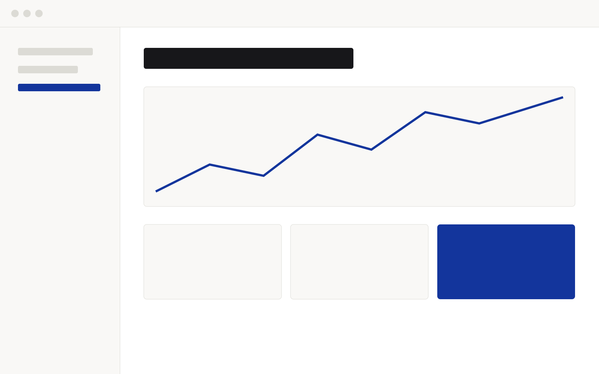

Before
60 min by hand
Hackathon name · 2026
X for Y that Z, said in one line a judge can repeat.
01 · The problem
Maria, store manager. One user, one moment, one number.
02 · The idea
Before
60 min by hand
After
2 min to review
03 · The product

04 · Proof
×38
more customers checked per hour than by hand.
05 · Proof
4.2 s
from upload to a checked answer, on real data.
06 · How it's built
In
Your data
LLM
Proposes
Code
Verifies
Out
Checked answer
Product name
app.example.com